Excel "Not Enough Memory" Error: The Real Causes and Permanent Fixes
Excel's 'not enough memory' error almost never means your computer has run out of RAM. It means Excel — specifically the 32-bit version installed on most PCs — has hit its internal 2 GB ceiling, or your workbook has accumulated invisible formatting bloat that inflates its memory footprint far beyond what its visible content suggests. This guide covers both causes and fixes them permanently.
Stripped of the tech speak, the error means one of three things — and only one of them is about actual memory:
- Excel’s internal 32-bit architecture has hit a hard 2 GB ceiling. This is the most common cause and the most misunderstood one. Excel is a 32-bit application on most installations — even on 64-bit Windows — and 32-bit applications can only address a maximum of 2 GB of RAM, regardless of how much RAM your computer has. You can have 32 GB of RAM and Excel 32-bit will still crash at 2 GB of spreadsheet data.
- The spreadsheet has accumulated hidden complexity consuming far more memory than its visible content suggests. Excel files frequently accumulate phantom formatting, named ranges referencing deleted data, conditional formatting rules that have multiplied silently, or pivot cache data ballooned out of proportion. A spreadsheet with 500 rows of data and 500,000 rows of invisible formatting is enormous.
- Excel’s undo history, clipboard, or temporary file cache has consumed its allocated memory pool. Every action in Excel is stored in the undo stack. Complex paste operations load large data into a clipboard buffer. These background processes can exhaust Excel’s memory allocation independently of the spreadsheet content.
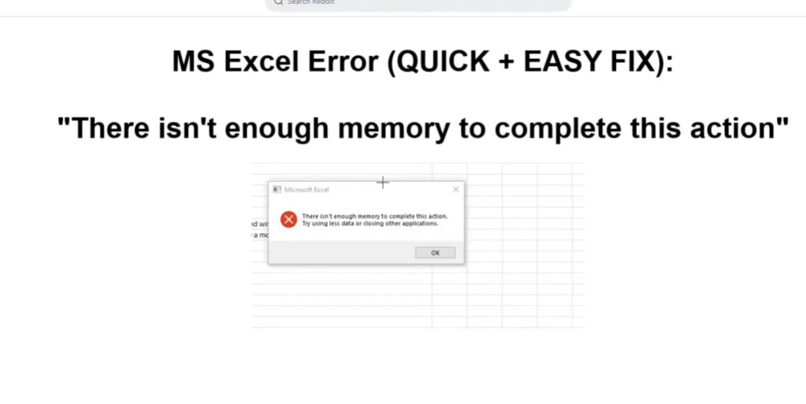
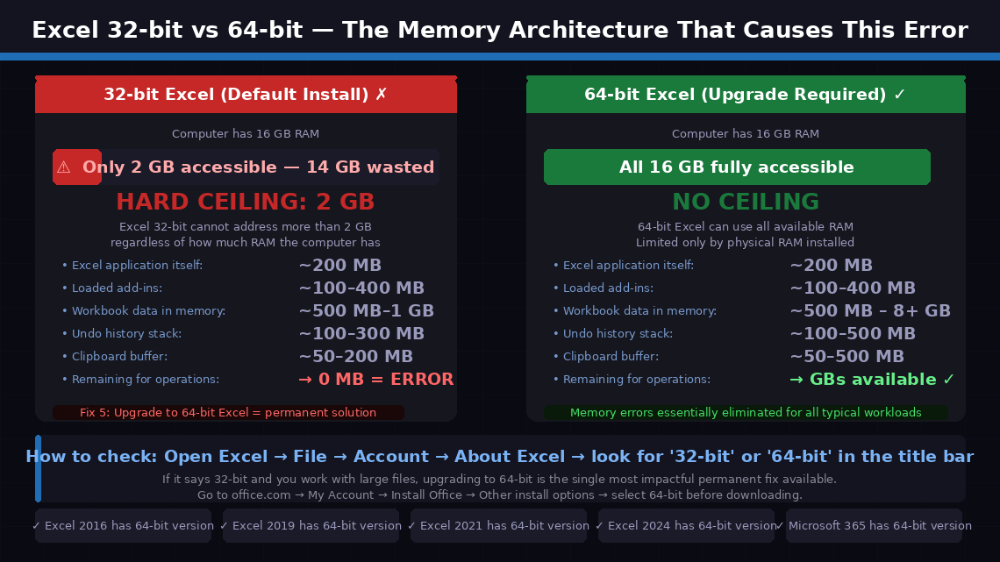
Bonus Fix: Clear Excel’s Temporary Files via AppData
Before the main fixes, this quick Windows-level cleanup clears Excel’s accumulated temporary files — the same files shown in the screenshots below — which can independently cause the memory error when they grow stale or corrupt.
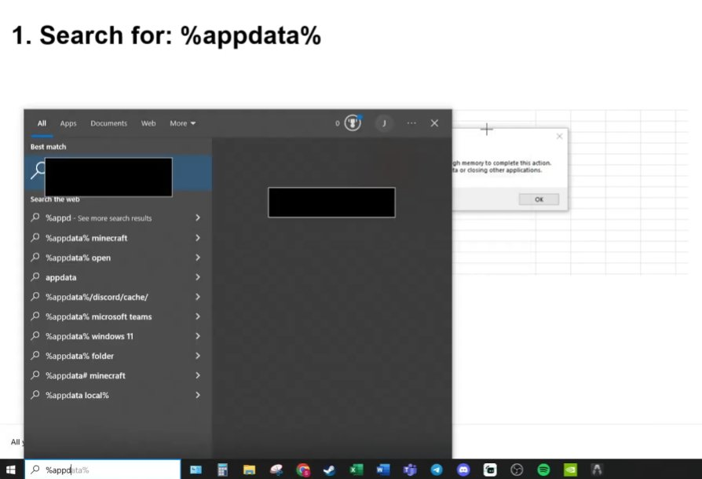
%appdata% and press Enter. This opens the AppData → Roaming directory where Excel’s profile files are stored. You can also paste this path directly into File Explorer’s address bar.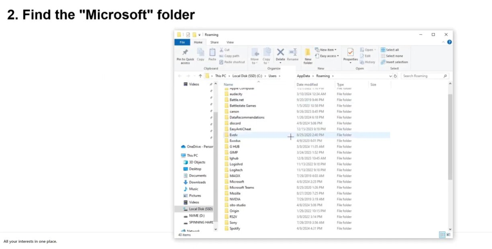
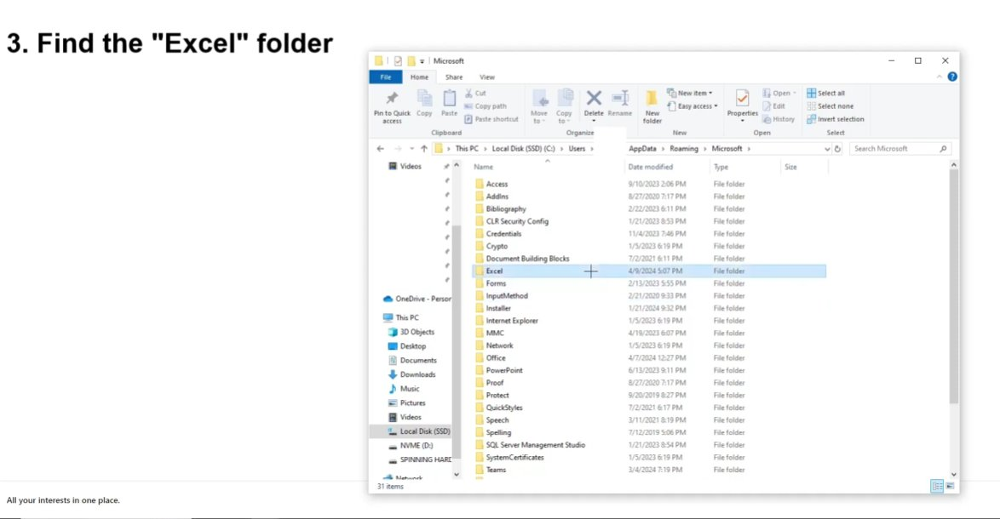
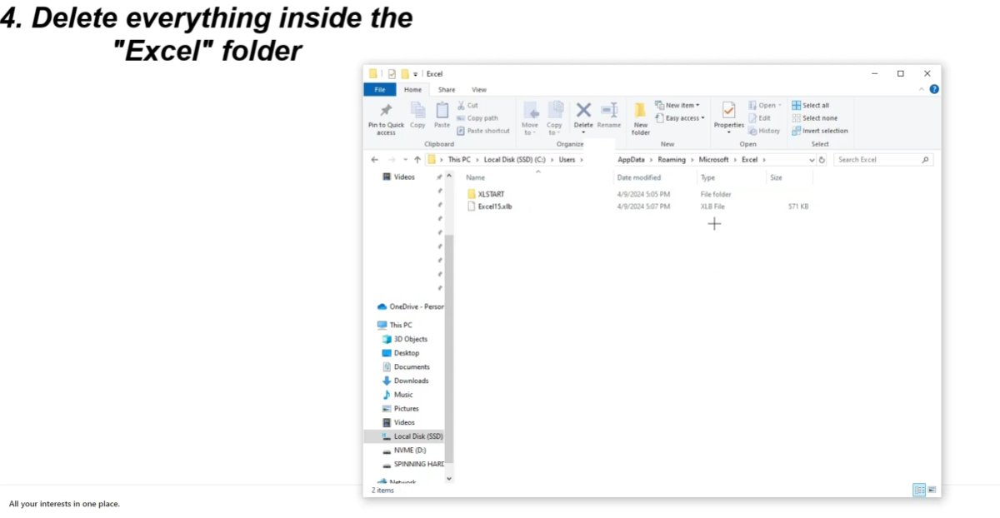
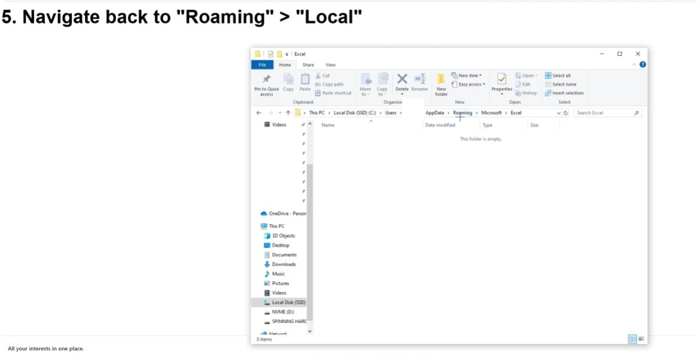
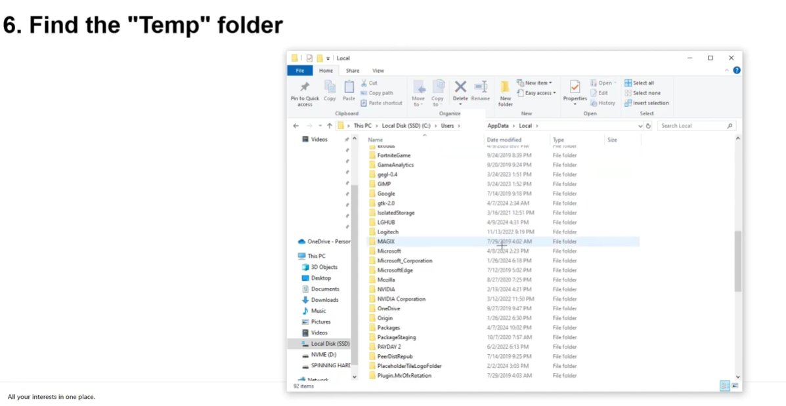
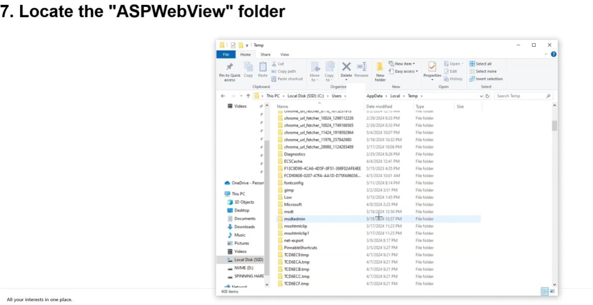
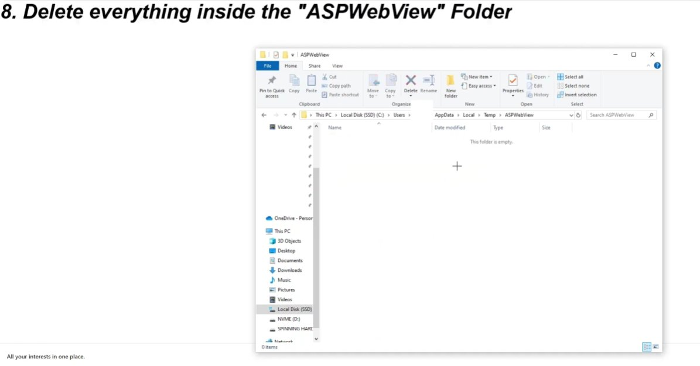
6 Step-by-Step Fixes
Follow these in order — stop when the problem is solved.
Before changing a single Excel setting, free up every byte of memory available by closing competing applications and clearing the internal clipboard buffer — which can consume hundreds of megabytes after copy-paste operations.
- Save your Excel workbook: press Ctrl + S.
- Close every other application — browser, email, Teams, Slack, other Office documents — everything.
- Inside Excel, go to the Home tab and click the small arrow at the bottom right of the Clipboard group to open the Clipboard pane.
- Click Clear All to empty the clipboard buffer.
- Press Esc to cancel any pending operations.
- Go to File → Options → Advanced → find “Cut, Copy, and Paste” section → turn off “Show Paste Options button when content is pasted.”
- Retry the action that triggered the error.
This fix addresses the most common hidden cause of the memory error in files that “shouldn’t” be causing problems. Excel files accumulate invisible overhead that consumes memory many times over what the visible data requires.
Check and remove phantom rows/columns:
- Press Ctrl + End in your spreadsheet. This jumps to the last cell Excel considers “used.” If this cell is far beyond your actual data — row 500,000 when your data ends at row 500 — Excel is formatting millions of empty cells.
- Select every row below your last real data row: click the row number below your last row, then press Ctrl + Shift + End.
- Right-click and choose Delete — not just Clear Contents, but full row deletion.
- Do the same for columns to the right of your last data column.
- Press Ctrl + S. Check the file size before and after — a reduction of several megabytes confirms the phantom rows were consuming significant space.
Fix conditional formatting applied to full columns:
- Go to Home → Conditional Formatting → Manage Rules → Show formatting rules for: This Worksheet.
- Look for rules applied to entire columns (e.g.,
$A:$A) rather than specific ranges. Change them to apply only to the specific data range (e.g.,$A$1:$A$500). Delete any unused rules.
Remove named ranges with errors:
- Go to Formulas → Name Manager. Sort by “Refers To” and look for named ranges showing
#REF!errors. Select all error-showing ranges and delete them.
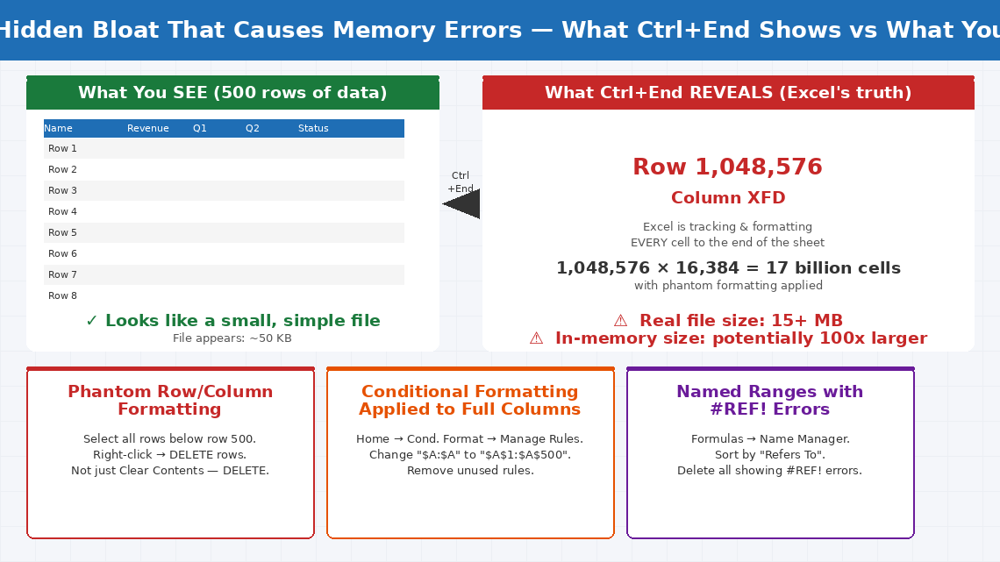
Pivot tables maintain a hidden cache — a stored copy of all source data — that can consume two to three times the memory of the visible pivot table. Multiple pivot tables with independent caches can easily consume gigabytes.
- Right-click any pivot table and select PivotTable Options.
- Click the Data tab.
- Uncheck “Save source data with file” — this stops Excel saving a redundant copy of all pivot source data inside the file.
- Check “Refresh data when opening the file.”
- Click OK and repeat for every pivot table in the workbook.
- For workbooks with multiple pivot tables using the same source data, configure them to share the same cache rather than creating independent copies — each independent cache is a full copy of the source data in memory.
- Save the file and check the file size — removing pivot cache bloat often reduces file size by 40–70%.
Excel uses your computer’s GPU for rendering charts, pivot tables, and large formatted ranges. When GPU memory conflicts with system memory management, Excel can throw the memory error even when system RAM is ample. Disabling hardware acceleration forces Excel to use software rendering, which often resolves the conflict.
- Open Excel and go to File → Options (Windows) or Excel → Preferences (Mac).
- Click Advanced.
- Scroll to the Display section.
- Check the box labelled “Disable hardware graphics acceleration.”
- Click OK and restart Excel completely.
- Retry the action that was producing the memory error.
This fix resolves the error for a notable proportion of users — particularly on machines with integrated graphics or where both integrated and dedicated GPUs are active simultaneously.
This is the most impactful fix for users who regularly work with large data sets, complex models, or files over 100 MB. Microsoft installs the 32-bit version of Office by default — even on 64-bit Windows — imposing a hard 2 GB ceiling on Excel’s addressable memory.
Check which version you currently have:
- Open Excel and go to File → Account → About Excel.
- Look at the top of the dialog — it will specify either 32-bit or 64-bit.
- If it says 32-bit and you regularly encounter memory errors, this is almost certainly the root cause.
Upgrade to 64-bit Excel:
- Sign in to office.com with your Microsoft account.
- Go to My Account → Install Office → Other install options.
- Select the 64-bit version before downloading.
- Uninstall your current 32-bit Office via Control Panel → Programs → Uninstall a program.
- Install the downloaded 64-bit Office package.
- After installation, verify in Excel: File → Account → About Excel — it should now show 64-bit.
After switching to 64-bit, the 2 GB memory ceiling is removed and Excel can address as much RAM as your system has.
When physical RAM is genuinely constrained — particularly on computers with 4 GB or 8 GB of RAM — increasing Windows’ virtual memory allocation gives Excel additional headroom by using a portion of the hard drive as overflow memory.
- Press Windows key + R, type
sysdm.cpl, press Enter. - Click the Advanced tab → Performance → Settings.
- Click Advanced tab → under Virtual memory, click Change.
- Uncheck “Automatically manage paging file size for all drives.”
- Select your C: drive, choose Custom size, and enter:
- Initial size: 1.5x your RAM in MB (e.g., 12288 for 8 GB RAM)
- Maximum size: 3x your RAM in MB (e.g., 24576 for 8 GB RAM)
- Click Set, then OK through all windows.
- Restart your computer — virtual memory changes do not take effect until restart.
When to Contact Microsoft Support
The Excel memory error is nine times out of ten a software and configuration issue. But there are situations where escalating makes sense:
- The error appears on a small, simple file (under 1 MB, under 1,000 rows, no pivot tables) that has never caused problems before. A memory error on a trivially small file points to a corrupted Excel installation or a deeper Windows memory management problem — not a spreadsheet issue.
- You’ve switched to 64-bit Excel but the error persists on files under 2 GB. This indicates either a corrupt workbook or a conflicting add-in leaking memory. Run Windows Memory Diagnostic (Windows key + R → mdsched.exe) to rule out physical RAM issues.
- You need to work with tens of millions of rows. At this scale, Excel is not the right tool regardless of how much RAM you add. Microsoft Power BI, SQL Server, or Python/Pandas are designed for this scale.
For Microsoft Excel support:
- Microsoft 365 subscribers: support.microsoft.com — Live chat available with subscription
- Community support: answers.microsoft.com — Excel section with active Microsoft MVPs
- India enterprise support: 1800-102-1100 (Microsoft India toll-free)
Quick Summary
| Fix | Difficulty | Time Needed |
|---|---|---|
| Clear AppData temp files (bonus fix above) | Easy | 5 minutes |
| Close all apps and clear Excel clipboard | Very Easy | 3 minutes |
| Remove phantom rows, excess formatting, bad named ranges | Easy | 15 minutes |
| Optimise pivot tables and remove cache bloat | Easy | 10 minutes |
| Disable hardware graphics acceleration | Very Easy | 2 minutes |
| Switch from 32-bit to 64-bit Excel | Moderate | 30 minutes |
| Increase Windows virtual memory | Moderate | 10 min + restart |
Start at Fix 1. For most users whose files have grown organically over months or years, Fix 2 and Fix 3 together will reduce file size dramatically and eliminate the memory error entirely. If you routinely work with large data and the error keeps recurring, Fix 5 (switching to 64-bit Excel) is the permanent architectural solution — a one-time change that removes the 2 GB ceiling for good.